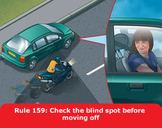

1. General rules (159 to 161)
159
Before moving off you should
- use all mirrors to check the road is clear
- look round to check the blind spots (the areas you are unable to
see in the mirrors)
- signal if necessary before moving out
- look round for a final check.
Move off only when it is safe to do so.

160
Once moving you should
- keep to the left, unless road signs or markings indicate
otherwise. The exceptions are when you want to overtake, turn right
or pass parked vehicles or pedestrians in the road
- keep well to the left on right-hand bends. This will improve your
view of the road and help avoid the risk of colliding with traffic
approaching from the opposite direction
- drive with both hands on the wheel where possible. This will help
you to remain in full control of the vehicle at all times
- be aware of other road users, especially cycles and motorcycles
who may be filtering through the traffic. These are more difficult
to see than larger vehicles and their riders are particularly
vulnerable. Give them plenty of room, especially if you are driving
a long vehicle or towing a trailer
- select a lower gear before you reach a long downhill slope. This
will help to control your speed
- when towing, remember the extra length will affect overtaking and
manoeuvring. The extra weight will also affect the braking and
acceleration.
161
Mirrors. All mirrors should be used effectively
throughout your journey. You should
- use your mirrors frequently so that you always know what is
behind and to each side of you
- use them in good time before you signal or change direction or
speed
- be aware that mirrors do not cover all areas and there will be
blind spots.
You will need to look round and check.
Remember: Mirrors – Signal – Manoeuvre